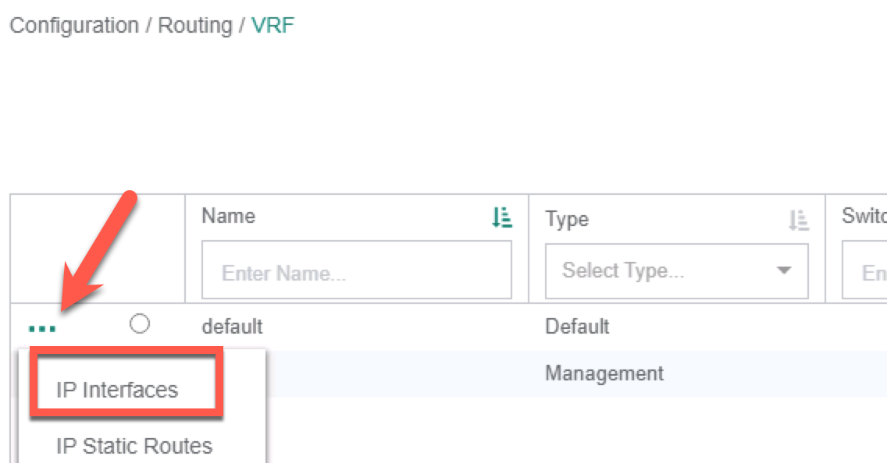
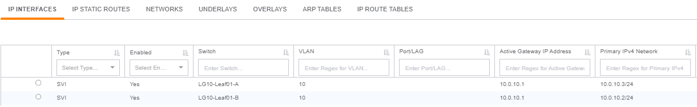
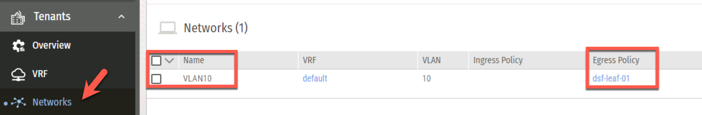
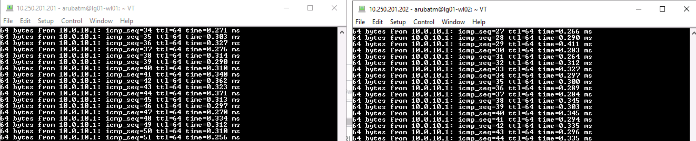
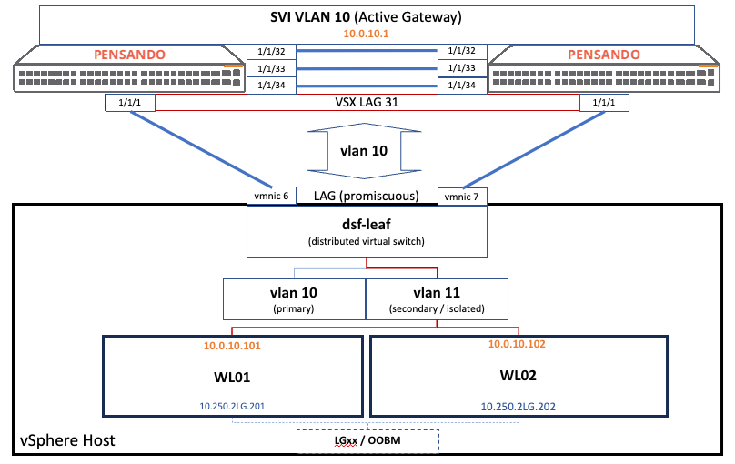
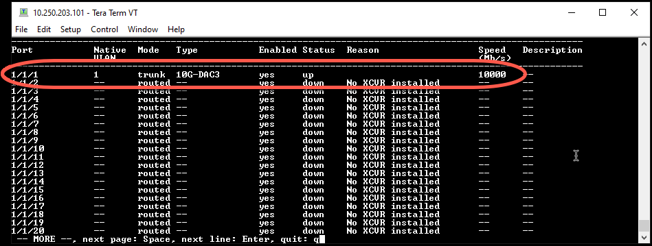

Lab 5 - Visibility and Troubleshooting#
Lab Overview#
Lab time: 30 minutes
On top of the stateful services and microsegmentation, the CX 10000 also delivers visibility into each and every East / West flow. During this lab, we will test some basic traffic flows (ping, SSH, iPerf3), the firewalling policies and also explore the power of having complete visibility.
Lab 5.1 - Add SVI to VLAN 10#
Description#
In order to successfully redirect packets over the switch, we need to create a correspondng Switched Virtual Interface (SVI) for VLAN 10 to the switch.
Validate#
In Fabric Composer, using the top menu, navigate to Configuration / Routing and then select VRF.
Click the 3 dots left of default and select IP Interfaces.

Fig. Lab 5 IP Interfaces
In the IP Interfaces context, select Actions, then Add and enter the following information in the form
Step 1 - Interfaces Type |
|
Enable this IP interface |
Yes (select) |
Type |
SVI |
VLAN |
10 |
Switches |
Select the VSX pair ( |
IP Subnet Address |
|
IPv4 Addresses |
|
Active Gateway IP Address |
|
Active Gateway MAC Address |
|
Enable VSX Shutdown on Split |
Yes |
Enable Local Proxy ARP |
Yes |
Click NEXT |
Step 2 - Name |
|
Name |
|
Description |
(optional) |
Click NEXT |
|
Review the Summary and APPLY |
Expected Results#
Verify the new SVI in the AFC

Fig. Lab 5 New SVI
Now let’s ensure that the Netowrk was added to the PSM by loggomg into the PSM:
URL |
10.250.2LG.31 (LG = Labgroup Number) |
Username |
|
Password |
|
Go to Tenants / Networks and you should see VLAN10 listed in your networks

Fig. Lab 5 PSM Networks
Lab 5.2 - Test Current Policies#
Description#
In the previous activity, you created a policy with a single allow_all rule, to allow all traffic between Workload01 and Workload02.
Validate#
To test the rule and visualize the flows, follow the following steps:
Using Putty or TeraTerm, open an SSH session with each workload
Workload |
Address for SSH* |
Username |
Password |
Hostname |
VLAN 10 Address |
|---|---|---|---|---|---|
1 |
10.250.2LG.201 |
|
|
lgLG-wl01 |
10.0.10.101 |
2 |
10.250.2LG.202 |
|
|
lgLG-wl01 |
10.0.10.102 |
From each workload, ping the VLAN 10 SVI 10.0.10.1 to verify connectivity between the VMs and the switches.

Fig. Lab 5 Ping SVI
Expected Results#
Now have a look at the following network diagram to understand the flow. Both WL01 and WL2 have 10.0.10.xxx IP Addresses and the Primary VLAN (VLAN 10) is paired with an Isolated VLAN (VLAN 11). The traffic on VLAN 11 is re-routed to the DSM chip on the CX10K for processing via the primary VLAN 10.

Fig. Lab 5 SVI Diagram
Policies will be defined using the AFC and sent, via automation, to the Pensando PSM. In turn, the PSM will program the enforcement on the DSM chips. A workload aware infrastructure built on top of a fully programmable, Automated, Scalable network pipeline.
Note
If you cannot ping the gateway, check to see that the switch ports are up! Enable port with no shut command.

Fig. Lab 5 Switch Port Up